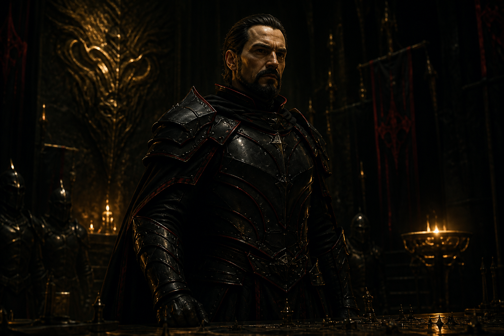
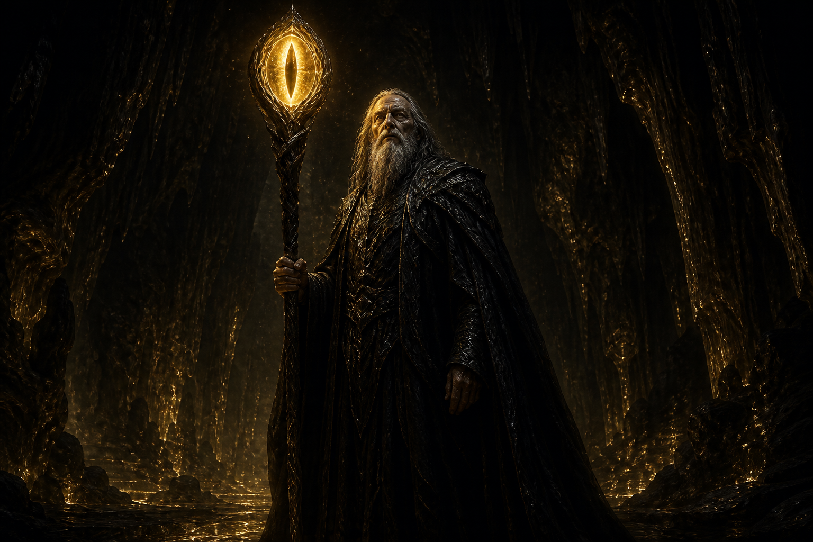
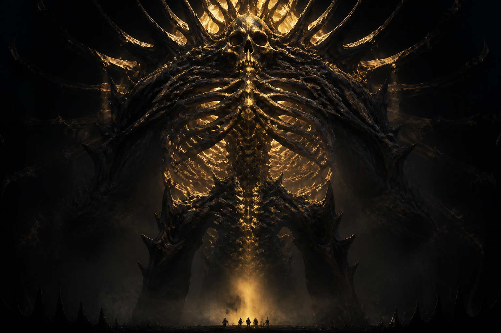
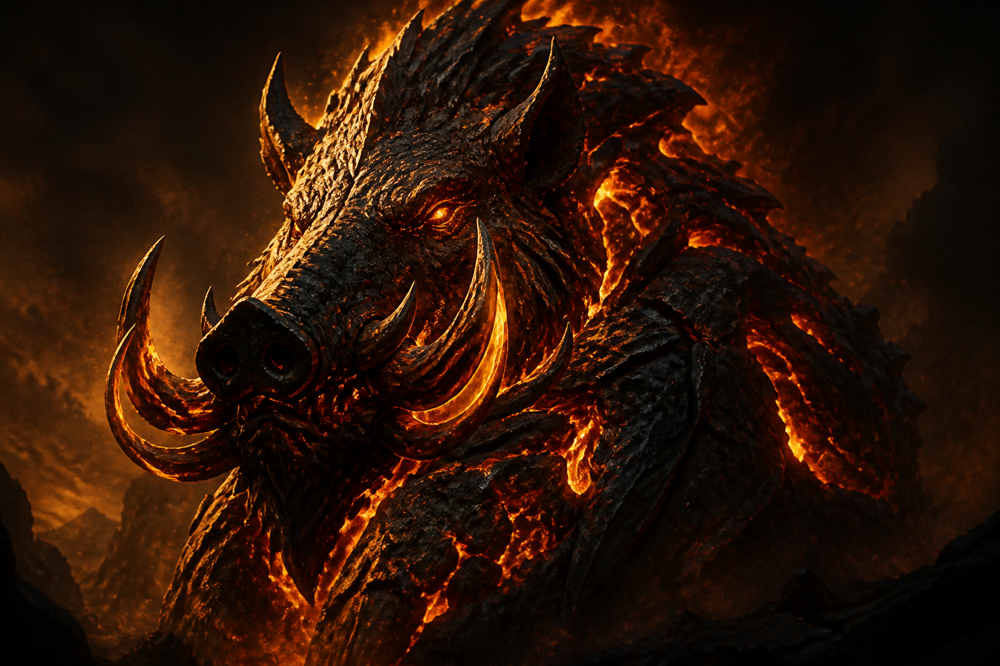
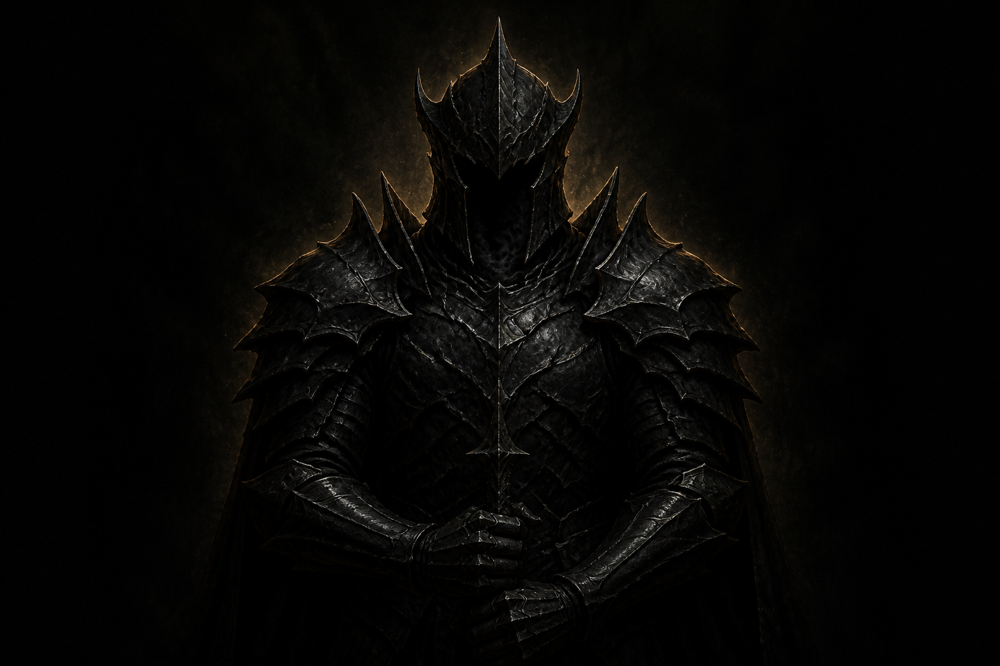
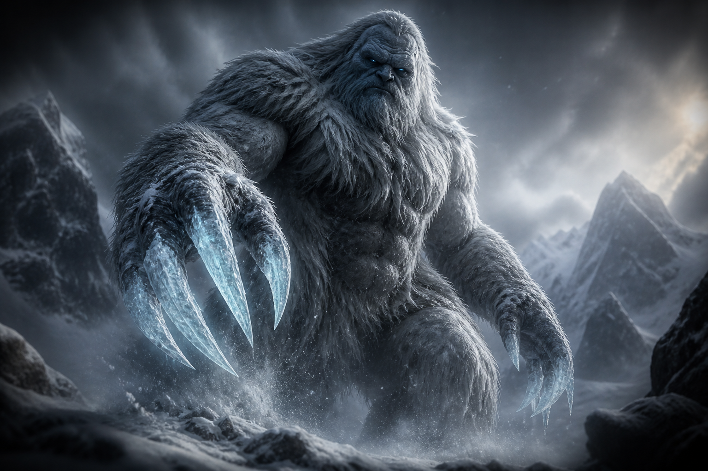

Plains · general · keeper
RYAN
Tactical mind, charisma, the Lightbearer's Blade. He wrote much of the Testament. Head of the Order after the ascent. A plainsman with a debt, not a second vessel.

The Shattered Age
He was appointed to carry the lamp of the dead — fire and light for guidance, and the underworld’s keeping. He desired to be the sun. What followed was not a border dispute: cities burned to ash, seasons were turned into weapons, and the green was razed until the world itself seemed unwilling — or unable — to hold its shape.

Chronicle
Blevins was entrusted with the Architectship of Life, and with fire and light for guidance, and with the underworld. That office is written in the Ancient Doctrine. We do not unwrite it. We write what he did with it.
He was not content to carry the lamp. He turned the fire given for guidance into a fire that unmakes. He attempted to become a creator in his own right. He reached into the fabric of reality and made a realm apart, and he called it the Deep. He could create. He could not sustain. He had no Nexus. Mountains formed where valleys belonged. Rivers ran upward. Living things were rewritten. Hog-like creatures are what remain of those who stayed too long. Only Azmardus the Great, among mortals, lived there without corruption — by sorcery, not by blessing.
He understood, at last, what was missing. The Deep needed a Nexus. He marched not merely to conquer, but to seize the Father's heart and finish a counterfeit world. That hunger is the central motive of the Great War.
Testament of the Shattered Age · V.9
The Usurper sought to unmake the Father's design, casting the world into chaos. Beware the lies of the Shattered One and his followers, for they offer power but bring only ruin. Hold fast to the light, and the Father will protect you. Testament of the Shattered Age, Chapter 5, Verse 9
The cities
Gonduras of the sandstone spires fell. One of his disciples unleashed a storm of ash and flame. The people scattered. The pyramids stood and were abandoned. Habib Asal saw his home become a wound.
Sakura of the cherry blossoms was frozen at the Blevins' command. Allenbraze — whose office is the seasons, winter and harvest and preservation — turned that office against the town. From the war he is called Winter. Nasuke Giro escaped. His people did not. We record the act. We do not invent a second theology for the god who did it.
Saffrika of the rivers was razed. Sharfiki Bongo's clan, hunters who had lived as if the Father still walked in green things, were slaughtered. The plains of the central territories learned the same lesson in a flatter tongue. Ryan was among the men who discovered that local was a word the Usurper did not keep. Nijjlias wandered between villages with a sword and found the villages ending.
The vessel and the five
Raised in the Order, in the monasteries' discipline. A man. The Father's demigod son. A vessel and a demigod, not to sit upon the gold, but to restore balance.
He gathered them. He blessed their weapons with his own given strength — endurance for a task, not an escape from the cycle into a monster's forever. He was victorious. The Blevins was shattered. The Shattering was not a clean joy. It was a necessary breaking, and it left a wound in the order of heaven, because a servant had to be broken who had been woven as a thread.
He was imprisoned in the Crimson Moon. The moon that holds him is a jail, not a shrine. Those who still seek him there seek a prisoner and call the seeking worship. The Cult of the Crimson Moon carries the mouth of a jailed god. He is antagonist. He is never chrome. Ember is his punctuation, and it is used sparingly, as a warning, not as a brand.
After the victory Noah John ascended to heaven. Ryan was given the keeping of the Order, that the teachings should not ascend with the teacher and leave the people an empty gold.
Plains · general · keeper
Tactical mind, charisma, the Lightbearer's Blade. He wrote much of the Testament. Head of the Order after the ascent. A plainsman with a debt, not a second vessel.
Plains · nomad
Frontline resolve. A free spirit guided by a moral compass. The Borrowed Sword on his back; the blessing in his fists. Stay in the will, even if the feet keep moving.
The unnamed
Soldiers who learned the Chant of the Guardians in a new age. Priests who blessed without pretending blessing was a substitute for courage. Monks who kept the texts while the walls shook. We refuse to pretend they were not there.
The Deep
The Deep remained when the body was shattered, still connected to its creator, because the soul survived in the Moon. It continues to change. It continues to produce life. The Cult does not necessarily consider the hog-like rewriting a failure. They call those creatures Blevins' first children. The Order calls them abominations. The Cult believes that when he returns, the Deep will finally be completed. The abandoned Cult town of Vespera still marks one guarded entrance from the age of the war.
Do not confuse his offer of a monster's forever with the blessing Noah laid on metal. The disciples healed. They remained men. If a teacher braids the two gifts, mark that teacher a liar, even if he loves Noah's name.
Testament of the Shattered Age · VI.5
Stand firm against the chaos of the world, for the Father's light shines brightest in the darkest hour. Fear not the trials before you, for even the weakest vessel can carry His strength when filled with faith. Testament of the Shattered Age, Chapter 6, Verse 5
The six
Six names the Cult of the Crimson Moon elevates as the Usurper’s chosen. This chronicle records them here, among the war’s wounds — not among the living gods, not among the terraces, and never upon the masthead of this house.

Heart · military
The Crimson General. Heart of the shattered body. No further body is written here.

Eye · sorcery
Grand Wizard. The Eye is affixed to his staff. He walked the Deep without hog-corruption — by sorcery, not by blessing.

Bone · former priest
The Skeletal Tyrant. Withered flesh into towering living bone. Once of the Order. The Order does not keep him.

Blaze
Behemoth of the Flame. Boar head. Body of stone and fire. Not a second brand.

Shadow · no given name
Shadowsteel armor. No human body beneath. Not a companion. One of six. This house will not invent a name.

Claw · origin, not a land
The Frost Walker. Yeti. Frost. Ice claws. His origin is the frozen mountains. That is origin. It is not a land.
Also kept
A handheld chronicle of the Moon’s long shadow is kept with the other works of this temple — apart from the altar’s gold, but not denied.